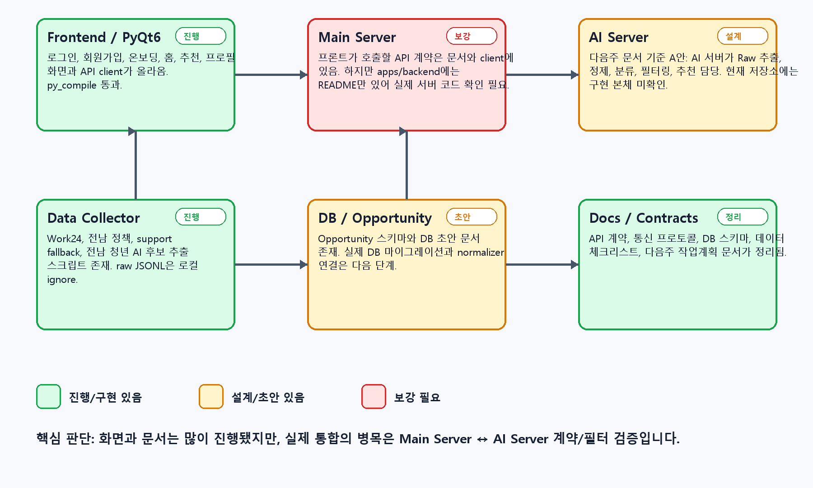
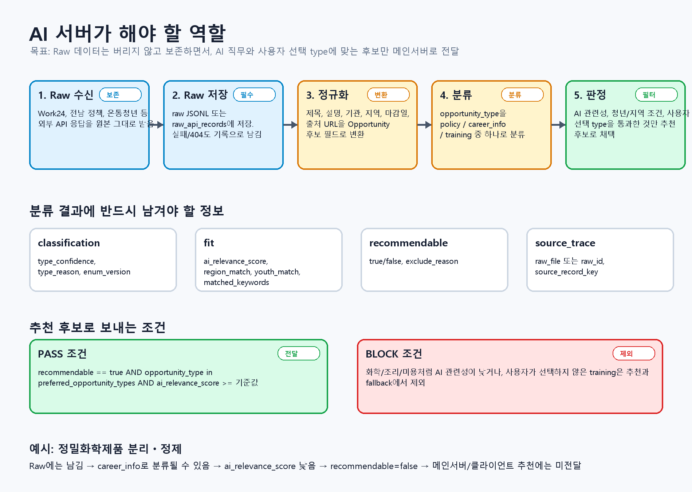
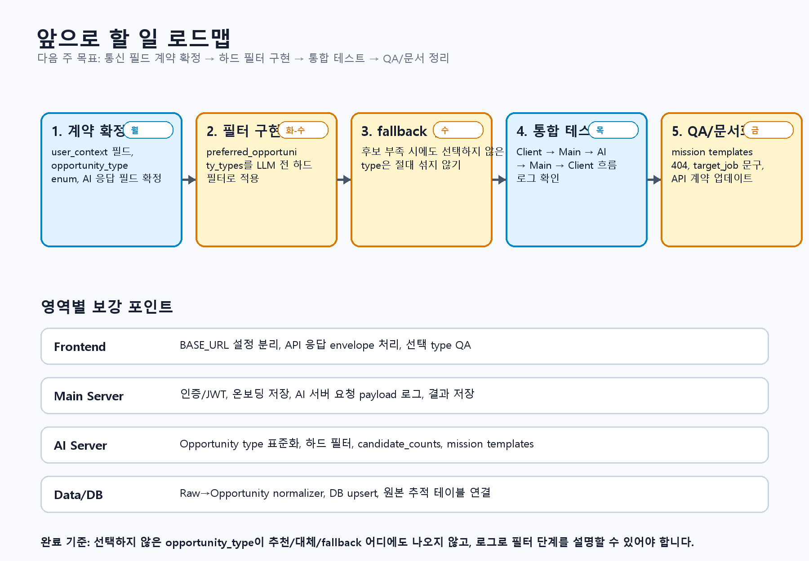

공공데이터를 AI 커리어 추천 흐름으로 바꾸며 배운 것
전라남도 청년에게 흩어진 교육, 정책, 지원사업 정보를 단순 목록이 아니라 다음 행동으로 이어지는 커리어 추천 흐름으로 바꾸려 했던 서비스 기획과 AI 자동화 기록입니다.
1. 문제는 정보 부족이 아니라 연결 부족이었다
청년 정책과 교육 정보는 이미 여러 곳에 존재한다. 문제는 사용자가 그 정보를 한 번에 이해하기 어렵다는 점이었다. 훈련 과정은 훈련 과정대로, 청년 정책은 정책대로, 지역 지원사업은 지원사업대로 흩어져 있고, 각각의 데이터는 형식과 기준이 다르다.
특히 전라남도 청년이 AI, 데이터, 개발, 디지털 직무 쪽으로 진입하려고 할 때는 단순히 “무슨 제도가 있는가”보다 “내가 지금 어떤 기회를 먼저 봐야 하는가”가 더 중요했다. 교육 과정, 지원 정책, 채용 정보, 지역 프로그램이 한 흐름 안에서 비교되어야 다음 행동이 생긴다.
그래서 이 프로젝트의 출발점은 검색 화면을 하나 더 만드는 것이 아니었다. 흩어진 공공데이터를 사용자의 상황과 관심 분야에 맞게 정리하고, 추천 이유와 로드맵, 미션으로 이어지는 서비스 흐름을 설계하는 것이었다.
2. 해결하려던 문제를 다시 정의했다
프로젝트 이름은 청년 AI 패스다. 목표는 전라남도 청년을 위한 공공데이터 기반 AI 커리어 패스 플랫폼을 만드는 것이었다.
대상 사용자는 전라남도에 거주하거나 전라남도 기반 기회에 관심 있는 청년이다. 특히 AI, 데이터, 개발, 디지털 직무로 진입하려는 사용자를 중심으로 보았다.
입력은 공공데이터 API, 직업훈련 정보, 지역 청년정책, 지원사업 후보, 사용자 관심 분야와 현재 수준이다. 출력은 추천 후보 카드, 추천 이유, 3개월 로드맵, 개인 미션, 미션 진행 상태가 되어야 했다.
이 프로젝트에서 중요한 질문은 “AI가 어떤 문장을 생성하는가”보다 “어떤 데이터를 추천 후보로 남기고, 어떤 데이터를 제외해야 하는가”였다.
3. 데이터는 원본과 서비스 모델을 나누어야 했다
공공데이터를 바로 화면에 연결하면 서비스가 외부 데이터 형식에 끌려다닌다. 어떤 API는 JSON을 주고, 어떤 데이터는 XML이나 CSV에 가깝고, 어떤 응답은 필드명이 일정하지 않다. 그래서 원본 응답과 서비스 내부 모델을 분리했다.
전체 흐름은 다음처럼 잡았다.
Public APIs / local source files
-> raw records / JSONL
-> normalizer
-> Opportunity
-> filter
-> AI reasoning
-> recommendation card / roadmap / mission원본은 버리지 않고 raw record로 남긴다. 이후 정규화 단계에서 제목, 기관, 지역, 마감일, 출처 URL, 기회 유형 같은 필드를 내부 표준 모델인 Opportunity로 변환한다. 이렇게 하면 프론트엔드와 추천 로직은 외부 API의 세부 필드명을 몰라도 된다.

4. 시스템은 화면보다 계약이 먼저였다
프로젝트를 진행하면서 화면은 비교적 빠르게 그려졌다. 로그인, 회원가입, 온보딩, 홈, 추천, 프로필 화면처럼 사용자가 보는 흐름은 PyQt6 클라이언트에서 구성할 수 있었다.
하지만 실제 병목은 화면이 아니라 계약이었다. 프론트엔드가 어떤 요청을 보내는지, 메인 서버가 어떤 payload를 저장하는지, AI 서버가 어떤 후보를 받아 어떤 결과를 반환하는지 정해야 했다. 계약이 모호하면 추천 결과가 화면에 나타나더라도 그 결과를 신뢰하기 어렵다.
그래서 구조를 네 영역으로 나누었다.
- Frontend: 사용자의 입력과 추천 결과 확인
- Main Server: 사용자, 온보딩, 추천 요청, 미션 상태 저장
- AI Server: 후보 분류, 추천 가능 여부 판단, 추천 이유 생성
- Data Collector: 외부 데이터 수집, raw 보존, 정규화 후보 생성
이렇게 나누니 “AI가 추천한다”라는 말이 조금 더 구체적인 작업으로 바뀌었다. AI 서버는 아무 데이터나 받아서 답하는 곳이 아니라, 정리된 후보를 검토하고 설명 가능한 결과를 반환하는 서비스 컴포넌트가 되어야 했다.
5. AI 서버의 역할은 추천보다 필터링에 가까웠다
처음에는 AI 서버가 추천 문장을 만들어주는 역할이라고 생각하기 쉽다. 하지만 실제로는 추천 문장을 잘 쓰는 것보다, 추천하면 안 되는 후보를 막는 일이 더 중요했다.
예를 들어 사용자가 교육 과정이 아니라 정책 지원을 보고 싶은데, fallback 후보에 교육 과정이 섞이면 추천 품질은 바로 무너진다. 화학, 조리, 미용처럼 AI 직무 관련성이 낮은 항목이 들어와도 마찬가지다. 사용자가 선택하지 않은 type은 추천과 대체 후보 어디에도 섞이지 않아야 했다.
그래서 AI 서버가 남겨야 할 정보는 다음처럼 정리했다.
classification: 후보가 어떤 기회 유형인지, 분류 근거는 무엇인지fit: 지역, 청년 조건, 키워드, AI 관련성이 맞는지recommendable: 실제 추천 후보로 보낼 수 있는지source_trace: 어떤 원본 데이터에서 왔는지 추적 가능한지

6. 실패하는 API를 전체 실패로 보지 않았다
공공데이터 프로젝트에서 가장 빨리 마주친 문제는 API의 불안정성이었다. 문서상 존재하는 경로가 실제 호출에서는 정상 응답을 주지 않거나, 특정 조건에서 404 또는 500 계열 오류가 발생하는 경우가 있었다.
이때 전체 서비스를 실패로 처리하면 MVP가 멈춘다. 그래서 source 단위 상태를 기록하고, 특정 소스가 막히면 다른 청년정책 데이터에서 support 후보를 추출하는 fallback 구조를 두었다.
이 판단은 서비스 기획 관점에서도 중요했다. 데이터 수집은 성공 또는 실패 하나로 끝나는 작업이 아니라, 어떤 소스가 실패했고 어떤 대체 경로를 사용했는지 기록해야 하는 운영 흐름이다. 그래야 나중에 추천 결과를 설명할 수 있고, 데이터 품질 문제도 추적할 수 있다.
7. 구현보다 어려웠던 것은 기준을 세우는 일이었다
프로젝트를 하면서 가장 많이 다시 생각한 부분은 추천 기준이었다. AI 관련성이 조금이라도 있으면 추천할 것인지, 사용자가 선택하지 않은 유형도 fallback으로 보여줄 것인지, 지역 조건이 약한 후보를 어느 정도까지 허용할 것인지 계속 기준을 세워야 했다.
결국 추천 시스템은 모델 하나로 끝나지 않았다. 데이터 원본, 정규화 모델, hard filter, AI 설명, 사용자 검토가 함께 있어야 했다. 특히 추천 제외 기준을 명확히 하지 않으면 AI가 그럴듯한 설명을 붙여도 서비스 품질은 좋아지지 않았다.
이 과정에서 기획자의 역할도 다시 보였다. 화면 구성만 정하는 것이 아니라, 데이터가 어떤 상태로 들어오고 어떤 기준으로 걸러지며 어떤 메시지로 사용자에게 전달되는지까지 설계해야 했다.
8. 다음으로 검증해야 할 것들
다음 단계는 기능을 더 많이 붙이는 것보다 계약과 필터를 단단하게 만드는 일이다. 특히 Main Server와 AI Server 사이의 요청/응답 구조를 확정하고, 선택하지 않은 기회 유형이 추천이나 fallback에 섞이지 않는지 통합 테스트로 확인해야 한다.
앞으로의 작업은 다음 순서로 정리했다.
- 사용자 context 필드와 opportunity type 계약 확정
- preferred opportunity type 기반 hard filter 구현
- 후보 부족 시 fallback 후보가 섞이는 방식 검증
- Client -> Main -> AI -> Main -> Client 흐름의 통합 테스트
- QA 문서와 API 계약 문서 정리

9. 이 프로젝트를 하며 배운 점
이 프로젝트는 공공데이터를 가져와 화면에 보여주는 일이 아니라, 데이터를 사용자의 다음 행동으로 바꾸는 과정을 설계하는 일이었다. 같은 데이터라도 raw로 남아 있을 때와, 표준 모델로 정리되어 추천 이유와 미션으로 연결될 때의 가치는 다르다.
또 하나 배운 점은 AI 자동화가 모든 판단을 대신하는 방식으로 설계되면 오히려 위험해질 수 있다는 것이다. 이 프로젝트에서 AI가 맡아야 할 역할은 후보를 설명하고, 추천 이유를 정리하고, 사용자가 다음 행동을 이해하도록 돕는 일이었다. 최종 품질은 데이터 구조, 제외 기준, source trace, 사람의 검토가 함께 만들었다.
전략기획과 서비스기획 관점에서 보면, 좋은 AI 서비스는 모델 성능만으로 설명되지 않는다. 사용자가 겪는 문제를 정의하고, 데이터가 흐르는 구조를 만들고, 실패했을 때의 대체 경로를 준비하고, 사람이 검토할 지점을 남겨야 한다. 청년 AI 패스는 그 관점을 실제 프로젝트 안에서 연습한 기록이다.